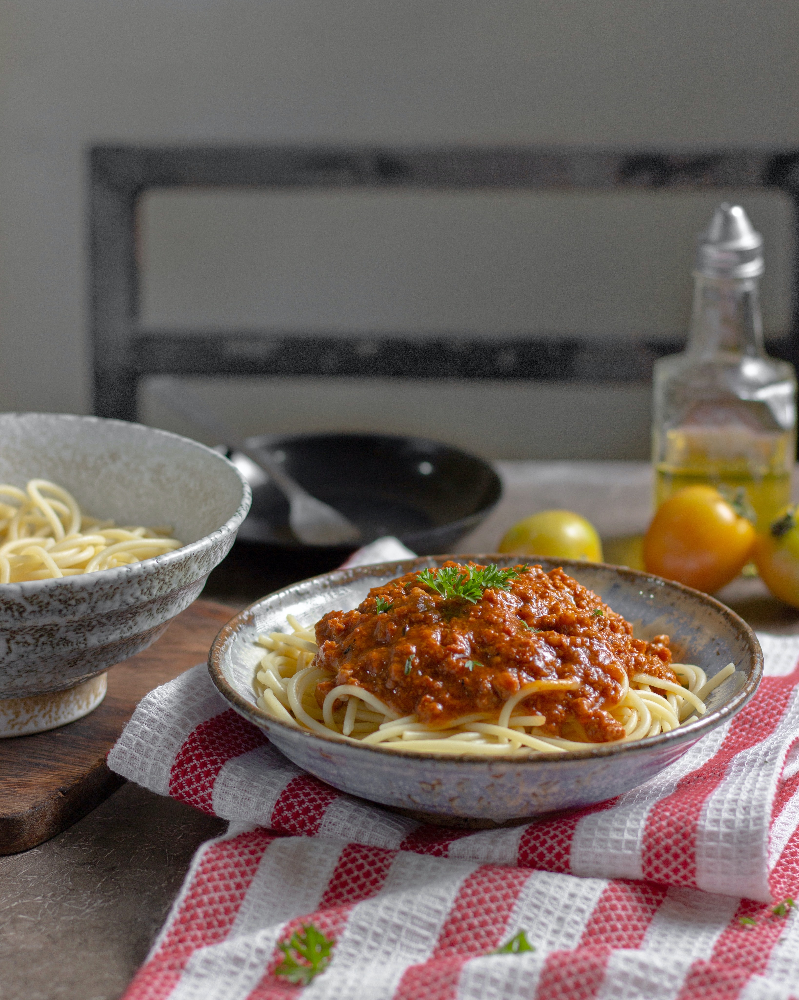

- CARBONARA
- AGLIO E OLIO
- SPAGHETTI BOLOGNESE
SPAGHETTI BOLOGNESE

Spaghetti bolognese (sometimes called spaghetti alla bolognese, or colloquially spaghetti with meat sauce, or just spaghetti) is a pasta dish that is popular outside Italy (such as in other parts of Europe, the Americas and Asia-Pacific), but not part of traditional Bolognese or even Italian cuisine. The dish is generally perceived as inauthentic when encountered by Italians abroad.
It consists of spaghetti served with a sauce made from tomatoes, minced beef, garlic, wine and herbs; sometimes minced beef can be replaced by other minced meats. In this sense the sauce is actually more similar to Neapolitan ragù from the south of Italy than the northern Bolognese version of ragù. It is often served with grated Parmesan on top, but local cheeses, such as grated cheddar are also often used. It may be served with a larger proportion of sauce to pasta than is common in genuine Italian spaghetti dishes. The sauce may be laid on top of the pasta (rather than being mixed in, in the Italian manner) or even served separately from it, leaving diners to mix it in themselves.